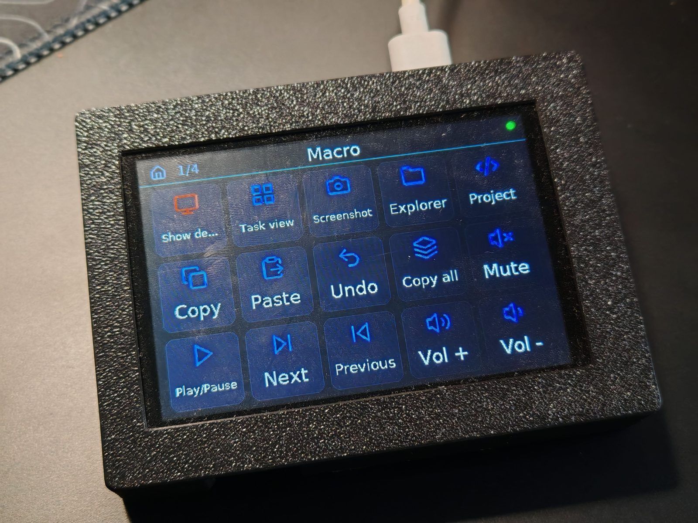
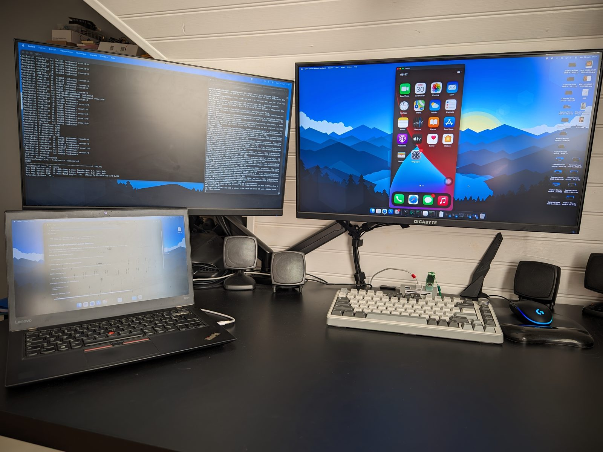
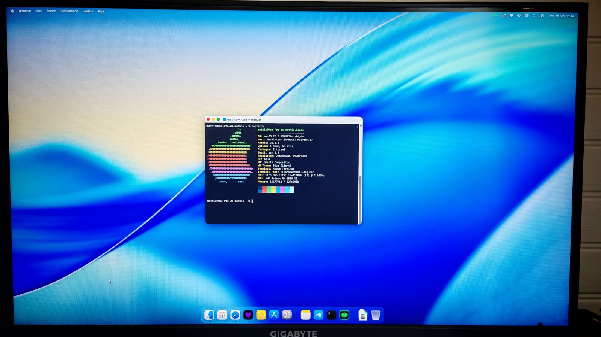
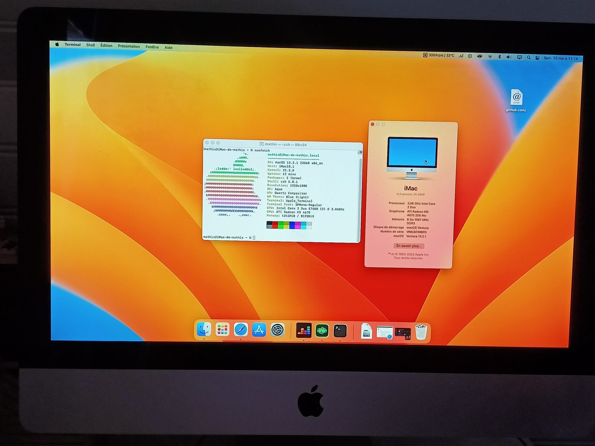
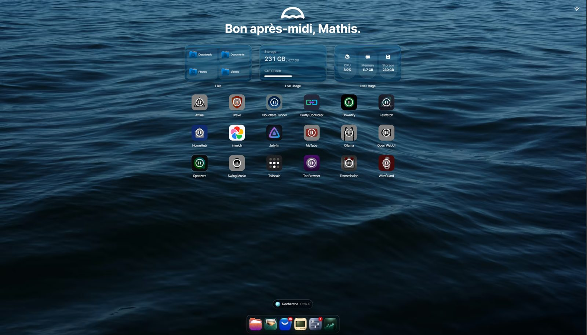

OpenDeck Projet actuel
Contrôleur personnalisé de type Stream Deck : écran tactile ESP32 et application de bureau.
Élève en Terminale · Informatique
Élève en Terminale générale, passionné par l'informatique. Depuis 2022, je mène des projets personnels autour des systèmes d'exploitation, de la virtualisation, de l'auto-hébergement et des systèmes embarqués.

À propos
Je suis scolarisé en Terminale générale au Lycée Saint Joseph à Argenteuil, avec les spécialités Mathématiques et Physique-Chimie et l'option Mathématiques expertes.
L'informatique, côté matériel comme côté logiciel, est mon principal centre d'intérêt. Depuis 2022, j'installe et je configure macOS sur différents PC avec OpenCore, en m'appuyant sur le guide Dortania. Je compile également des projets open source depuis GitHub, j'expérimente l'émulation et la virtualisation, et je résous les problèmes techniques rencontrés.
Je pratique une veille technologique active : émulation de la PS5, décompilation et recompilation de jeux vidéo et applications de l'intelligence artificielle au développement logiciel.
En dehors de l'informatique, je pratique la plongée et l'apnée, ainsi que le volley au sein de l'association sportive de mon lycée.
Compétences
Compétences acquises lors de mes stages en entreprise et par la pratique personnelle.
Projets

Contrôleur personnalisé de type Stream Deck : écran tactile ESP32 et application de bureau.

Installation de macOS sur quatre PC non-Apple avec OpenCore, de Monterey à Tahoe.

Installation de macOS Ventura sur un Mac ancien, non supporté officiellement par Apple.
Expérimentation de la virtualisation d'iOS 14 avec Inferno, un projet open source basé sur QEMU.

Serveur personnel sous Umbrel, hébergeant des services conteneurisés avec Docker.
Parcours
Spécialités Mathématiques et Physique-Chimie, option Mathématiques expertes.
Découverte de différents métiers, notamment celui de Data Analyst. Création de tableaux de bord interactifs avec Power BI et traitement de données.
Voir le diaporama du stage (PDF) →Stage du 5 au 9 février, entité ALMT, équipe APS : outils de supervision d'applications (Geneos, Dynatrace), métier d'ingénieur de production, création d'un script Ansible et recherche sur le renouvellement d'une paire de clés GPG.
Voir le diaporama du stage (PDF) →Prévention et secours civiques de niveau 1.
Installation et configuration de macOS sur différents PC avec OpenCore et le guide Dortania.
Méthode
Je pars toujours d'un projet concret : étude de la documentation, mise en place, tests, puis résolution des problèmes jusqu'à obtenir un résultat stable. J'utilise également l'intelligence artificielle comme assistant de développement. Sur OpenDeck, je définis l'architecture, les fonctionnalités et les orientations du projet ; l'IA m'assiste, mais ne le pilote pas.
Au-delà du numérique
Hardware, software et développement.
Dont l'émulation et la décompilation.
Automobile et deux-roues.
Niveau 1, pratique hebdomadaire depuis 2017.
Une passion en dehors des écrans.
Contact
Pour échanger sur mes projets ou mon parcours, n'hésitez pas à m'écrire.